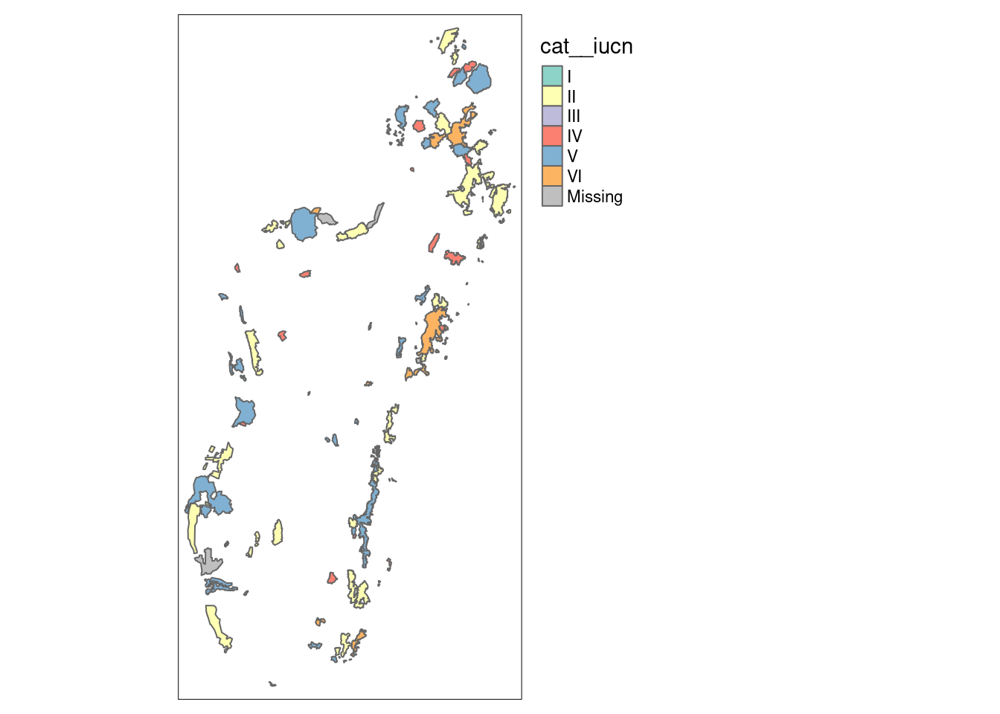

Les bonnes ressources anglophones gratuites sont très nombreuses, très facile à trouver sur le Web. Les grands classiques est R for data science, de Grolemund et Wickham (2022). On se focalise ici avec deux autres qui sont le plus en lien avec nos sujets :
N’hésitez pas à chercher directement sur le Web en cas de problème. Vous serez souvent conduits vers les forums stackoverflow ou RStudio, qui sont aussi des ressources très précieuses pour résoudre des problèmes très spécifiques.
A noter : un nombre croissant d’utilisteurs utilise VS Code. C’est une alternative intéressante, pour des utilisateurs déjà confirmés :
11.2 Import des données
En très bref :
Pour les fichiers excle ou csv, dans le volet “files” du panneau en bas à droite de l’interface Rstudio, cliquer sur le fichier en question et utiliser l’assistant d’import.
Pour les autres fichiers, se référer à l’aide ou chercher sur internet.
Voir cette page pour un topo sur les imports. [#TODO:Préciser l’url]
11.3 Principes élémentaires de manipulation de données en R
On se focalise ici sur quelques aspects qui peuvent être requis pour la manipulation du code et à la marge. Points à traiter :
Le signe <- correspond à l’assignation d’une valeur à une variable. Il est presque équivalent à =, avec quelques différences dans certaines circonstances particulières, qui fait qu’on privilégie toujours <-.
# Ce qui suit un dièze n'est pas exécuté. On appelle ça un commentaire.# On commence par faire une opération simple3+4
[1] 7
# Ce qui équivaut à :a <-3b <-4a + b
[1] 7
# Et on peut également stocker le résultat dans une nouvelle variable c <- a + bc
[1] 7
R est constitué de fonctions. De nombreuses fonctions prédéfinies sont contenues dans la base de R ou dans des packages qu’on ajoute (qu’on verra plus tard). La meilleure manière de comprendre ce qu’est une fonction est d’en créer une soi même.
# On crée une fonction "ajoute" qui prend deux paramètres. # x est Un premier et y est celui qu'on ajouteajoute <-function(x, y) { x + y}# On peut maintenant utiliser cette foncctionajoute(3, 4)
[1] 7
# On peut effectuer les mêmes opérations. Les valeurs a et b sont encore # en mémoire, donc on peut faire :ajoute(a, b)
[1] 7
c <-ajoute(a, b)c
[1] 7
ajoute(c, a)
[1] 10
Les fonctions disposent d’une documentation qu’on peut explorer en utilisant l’aide.
Exercice pratique sur la recherche d ’aide.
Le signe %>% est un “tuyau”. On peut le lire à haute voix comme “ensuite”. Par exemple :
library(tidyverse)d <- a %>%ajoute(b) %>%ajoute(c)d
[1] 14
na.rm : Les valeurs manquantes, notées NA dans R (certaines peuvent avoir pour valeur NaN). On utilise na.rm pour les éluder dans les opérations simples.
# On commence par créer les variables (les colonnes du tableau)noms <-c("John", "Jack", "Cindy", "Samantha")sexe <-c("homme", "homme", "femme", "femme")ages <-c(42, 57, 24, NA)poids <-c(87, 73, NA, NA)tailles <-c(174, 198, 192, 164)# On les rassemble dans un tableau ma_table <-data.frame(noms, sexe, ages, poids, tailles)# On peut faire une moyenne sur les tailles car on a toutes les variablesmean(ma_table$tailles)
[1] 182
sum(ma_table$tailles)
[1] 728
# Mais la moyenne ne fonctionne pas immédiatement sur les poids ou les âges# car il manque des variablesmean(ma_table$ages)
[1] NA
sum(ma_table$poids)
[1] NA
# Il faut préciser qu'il faut omettre les variables manquantesmean(ma_table$ages, na.rm =TRUE)
[1] 41
sum(ma_table$poids, na.rm =TRUE)
[1] 160
verbes :
select : choisir des colonnes
filter : choisir des lignes
mutate : modifier des valeurs
group_by : variables pour des tris
créer des filtres : summarise
# Un exemple qui combine ces opérationsma_table %>%filter(!is.na(ages)) %>%select(sexe, ages, tailles, poids) %>%group_by(sexe) %>%summarise(nb_pers =n(),somme_poids =sum(poids, na.rm =TRUE),taille_max =max(tailles, na.rm =TRUE),age_moy =mean(ages, na.rm =TRUE))
Deux opérations particulière requièrent une étude plus approfondies
Jointures : fusionner deux tableaux par une variable d’identification (“clé”)
Pivots : passer un tableau de long en large
map : appliquer des opérations successives
unnest : déplier des listes imbriquées
Un point important est relatif aux types des variables : numérique, catégorielles, textes, dates, spatiales… En général, les opérations ne peuvent concerner que des variables du même type. Les fonctions sont souvent contraignantes quant aux types des variables qu’elles prennent comme arguments.
Pour une analyse plus approfondie, voir juba.
11.4 Produire des cartes simples avec R
# Les librairies requises library(sf) # pour traiter des données spatialeslibrary(tmap) # pour faire des cartes# Charger une carte des carte <-st_read("data/Vahatra/Vahatra98AP.shp") %>%st_make_valid()
Reading layer `Vahatra98AP' from data source
`/home/florent/Documents/Stats/conservation-deforestation-madagascar2/data/Vahatra/Vahatra98AP.shp'
using driver `ESRI Shapefile'
Simple feature collection with 98 features and 12 fields
Geometry type: MULTIPOLYGON
Dimension: XY
Bounding box: xmin: 43.25742 ymin: -25.60502 xmax: 50.47724 ymax: -11.98301
CRS: NA
# On projette la cartetm_shape(carte) +tm_polygons(col ="cat__iucn") +tmap_options(check.and.fix =TRUE) +# Parce qu'on a quelques erreurs topotm_layout(legend.outside =TRUE)

11.5 Produire des graphiques avec R
On utilise le package ggplot, avec la syntaxe suivante.
Code
# On réalise un graphique simplecarte %>%ggplot(aes(x = cat__iucn, y = hectares)) +geom_col()
Grolemund, Garrett, and Hadley Wickham. 2022. R for Data Science: Import, Tidy, Transform, Visualize, and Model Data. 1st edition. Sebastopol, CA: O’Reilly Media. https://r4ds.had.co.nz/.
Lovelace, Robin, Jakub Nowosad, and Jannes Muenchow. 2022. Geocomputation with R. Boca Raton London New York: Routledge. https://geocompr.robinlovelace.net/.